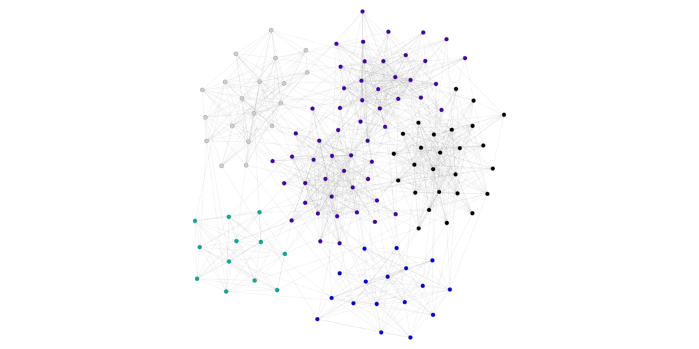

Quick Tutorial¶
[2]:
%pylab inline
import gct
from gct.metrics import GraphClusterMetrics, ClusterComparator, GraphMetrics, SNAPGraphMetrics
Populating the interactive namespace from numpy and matplotlib
Generate a random graph¶
We are going to create an undirected unweighted random graph with LFR(Lancichinetti–Fortunato–Radicchi) algorithms
[3]:
from gct.dataset import random_dataset
[4]:
if gct.dataset.local_exists("get_start"):
ds=gct.dataset.load_dataset("get_start")
else:
# a named graph be persistent on disk, use overide option if needed.
ds=random_dataset.generate_undirected_unweighted_random_graph_LFR(name="get_start", \
N=128, k=16, maxk=32, mu=0.2, minc=32)
[5]:
#gct.remove_data("get_start") #the dataset can be removed
[6]:
#show the meta data
ds.get_meta()
[6]:
{'name': 'get_start',
'weighted': False,
'has_ground_truth': True,
'directed': False,
'is_edge_mirrored': False,
'parq_edges': '/data/data/get_start/edges.parq',
'parq_ground_truth': {'default': '/data/data/get_start/gt_default.parq'},
'additional': {'genopts': {'seed': None,
'C': None,
'om': None,
'on': None,
'maxc': None,
'minc': 32,
't2': None,
't1': None,
'mu': 0.2,
'maxk': 32,
'k': 16,
'N': 128,
'name': 'LFR',
'directed': False,
'weighted': False}},
'description': 'LFR random graph'}
[9]:
ds.get_edges().head()
[9]:
| src | dest | |
|---|---|---|
| index | ||
| 0 | 0 | 16 |
| 1 | 0 | 34 |
| 2 | 0 | 40 |
| 3 | 0 | 49 |
| 4 | 0 | 56 |
[6]:
#show the graound truth. A graph may have multiple ground truth. Here it is default.
gt=ds.get_ground_truth()['default']
gt.value().head()
2019-11-05 19:14:34,678 - Clustering - INFO - reading/data/data/get_start/gt_default.parq
INFO:Clustering:reading/data/data/get_start/gt_default.parq
[6]:
| node | cluster | |
|---|---|---|
| index | ||
| 0 | 0 | 6 |
| 1 | 1 | 5 |
| 2 | 2 | 5 |
| 3 | 3 | 4 |
| 4 | 4 | 1 |
[7]:
#there are six clusters and #node per cluster is shown
gt.value()['cluster'].value_counts()
[7]:
3 27
1 27
4 26
5 19
6 17
2 12
Name: cluster, dtype: int64
[ ]:
[8]:
#networkx draws the graph showing that there are probably 6 clusters
import networkx as nx
nx.draw(ds.to_graph_networkx(), node_size= 35, width=0.2)
[9]:
#for large graph, graph_tool is better at drawing. Here is wrapper function to use graph_tool drawing
GraphClusterMetrics(ds, gt).graph_tool_draw()
[10]:
#We can show some basic graph properties using GraphMetrics and SNAPGraphMetrics class
gm=GraphMetrics(ds)
sgm=SNAPGraphMetrics(ds)
gm.density,gm.directed, gm.weighted,gm.num_edges, gm.num_vertices, sgm.average_clustering_coefficient(),sgm.diameter()
2019-11-05 19:14:35,707 - Dataset:get_start - INFO - reading /data/data/get_start/edges.parq
INFO:Dataset:get_start:reading /data/data/get_start/edges.parq
[10]:
(0.13213582677165353, False, False, 1074, 128, 0.4826466293236973, 4)
[11]:
#show degree histogram
plt.plot(*(zip(*sgm.degree_histogram)))
plt.xlabel("Degree")
plt.ylabel("Count");
Run Clustering Algorithms¶
[12]:
#Show available algorithms
gct.list_algorithms()
[12]:
['oslom_Infohiermap',
'oslom_Infomap',
'oslom_OSLOM',
'oslom_copra',
'oslom_louvain_method',
'oslom_lpm',
'oslom_modopt',
'pycabem_GANXiSw',
'pycabem_HiReCS',
'pycabem_LabelRank',
'cdc_CONGA',
'cdc_CliquePercolation',
'cdc_Connected_Iterative_Scan',
'cdc_DEMON',
'cdc_EAGLE',
'cdc_FastCpm',
'cdc_GCE',
'cdc_HDEMON',
'cdc_LinkCommunities',
'cdc_MOSES',
'cdc_MSCD_AFG',
'cdc_MSCD_HSLSW',
'cdc_MSCD_LFK',
'cdc_MSCD_LFK2',
'cdc_MSCD_RB',
'cdc_MSCD_RN',
'cdc_MSCD_SO',
'cdc_MSCD_SOM',
'cdc_ParCPM',
'cdc_SVINET',
'cdc_TopGC',
'cdc_clique_modularity',
'cgcc_CGGC',
'dct_dlplm',
'dct_dlslm',
'dct_dlslm_map_eq',
'dct_dlslm_no_contraction',
'dct_dlslm_with_seq',
'dct_infomap',
'dct_seq_louvain',
'igraph_community_edge_betweenness',
'igraph_community_fastgreedy',
'igraph_community_infomap',
'igraph_community_label_propagation',
'igraph_community_leading_eigenvector',
'igraph_community_multilevel',
'igraph_community_optimal_modularity',
'igraph_community_spinglass',
'igraph_community_walktrap',
'mcl_MCL',
'networkit_CutClustering',
'networkit_LPDegreeOrdered',
'networkit_PLM',
'networkit_PLP',
'alg_GossipMap',
'alg_RelaxMap',
'alg_pg_label_propagation',
'scan_AnyScan_Scan',
'scan_AnyScan_anyScan',
'scan_AnyScan_anyScanParl',
'scan_AnyScan_pScan',
'scan_Scanpp',
'scan_pScan',
'scan_ppScan',
'scan_ppScanSSE',
'sklearn_AffinityPropagation',
'sklearn_SpectralClustering',
'snap_Clauset_Newman_Moore',
'snap_Girvan_Newman',
'alg_Paris',
'alg_lso_cluster',
'alg_streamcom']
[13]:
#get help on an algorithm
help(gct.alg_GossipMap)
Help on function alg_GossipMap in module gct.alg.function:
alg_GossipMap(name, graph, thresh=None, tol=None, maxiter=None, maxspiter=None, trials=None, interval=None, outmode=None, ncpus=None, scheduler=None, engine_opts=None, graph_opts=None, scheduler_opts=None, seed=None)
A wrapper of *GossipMap* algorithm from https://github.com/uwescience/GossipMap.
Arguments
GossipMap Algorithm:
================================ =======================================================
--help Print this help message.
--graph arg The graph file. Required.
--format arg (=snap) The graph file format.
--thresh arg (=0.001) The threshold for convergence condition.
--tol arg (=1.00e-15) The threshold for pagerank (ergodic
state) convergence condition.
--maxiter arg (=10) The maximum of the iteration for finding
community.
--maxspiter arg (=3) The maximum of the iteration of sp-graph
for finding community.
--trials arg (=1) The number of trials for finding
community repeatedly.
--interval arg (=3) The time interval for checking whether
the received message is valid or not.
--mode arg (=1) The running mode of finding community: 1
- coreOnce, 2 - coreRepeat.
--outmode arg (=2) The running outerloop mode of finding
community: 1 - outerOnce, 2 -
outerRepeat.
--prefix arg If set, this app will save the community
detection result.
--ncpus arg (=6) Number of cpus to use per machine.
Defaults to (#cores - 2)
--scheduler arg Supported schedulers are: fifo, sweep,
priority, queued_fifo. Too see options
for each scheduler, run the program with
the option ---schedhelp=[scheduler_name]
--engine_opts arg string of engine options i.e.,
"timeout=100"
--graph_opts arg String of graph options i.e.,
"ingress=random"
--scheduler_opts arg String of scheduler options i.e.,
"strict=true"
--engine_help arg Display help for engine options.
--graph_help arg Display help for the distributed graph.
--scheduler_help arg Display help for schedulers.
================================ =======================================================
Reference
Bae, Seung-Hee, and Bill Howe. "GossipMap: A distributed community detection algorithm for billion-edge directed graphs." High Performance Computing, Networking, Storage and Analysis, 2015 SC-International Conference for. IEEE, 2015.
We may specify a name when we run an algorithm, the run result of which will be persistent on disk and be loaded later. We run a simple lpa first.
[14]:
def mean_dict(d):
if isinstance(d,dict):
return np.mean(list(d.values()))
else:
return d
[15]:
lpa_cluster=gct.alg_pg_label_propagation("get_start_lpa", ds)
2019-11-05 19:14:35,992 - get_start_lpa - INFO - Running /opt/gct/submodules/PowerGraph/label_propagation --graph /tmp/tmpu2xjaf03/edges.txt --saveprefix=output.cluster --execution async --ncpus 7 --weighted 0 --directed 0
INFO:get_start_lpa:Running /opt/gct/submodules/PowerGraph/label_propagation --graph /tmp/tmpu2xjaf03/edges.txt --saveprefix=output.cluster --execution async --ncpus 7 --weighted 0 --directed 0
2019-11-05 19:14:36,483 - get_start_lpa - INFO - Made 5 clusters in 0.476943 seconds
INFO:get_start_lpa:Made 5 clusters in 0.476943 seconds
[16]:
lpa_cluster
[16]:
{'runname': 'get_start_lpa', 'params': {'execution': 'async', 'ncpus': 7, 'weighted': 0, 'directed': 0}, 'dataname': 'get_start', 'meta': {'lib': 'powergraph', 'name': 'label_propagation'}, 'timecost': 0.4769434928894043, 'clusters': {3: [105, 115, 73, 47, 3, 106, 120, 37, 71, 91, 107, 122, 108, 43, 58, 95, 40, 64, 112, 75, 12, 103, 90, 101, 111, 50], 5: [89, 4, 110, 124, 85, 126, 68, 63, 102, 100, 32, 14, 35, 26, 38, 67, 54, 56, 59, 113, 5, 99, 83, 125, 119, 80, 84, 98, 69, 116, 10, 114, 94, 87, 97, 121, 104, 46, 88, 66, 118, 127, 109, 123, 117, 7, 92, 57, 36, 17, 18, 74, 48, 79], 6: [0, 49, 76, 27, 16, 81, 6, 72, 22, 34, 60, 8, 20, 39, 42, 65, 52], 9: [21, 31, 13, 24, 41, 44, 9, 25, 55, 45, 28, 61], 19: [51, 86, 2, 53, 62, 93, 15, 11, 33, 78, 1, 77, 96, 19, 30, 23, 82, 70, 29]}}
[17]:
gcm=GraphClusterMetrics(ds, lpa_cluster)
print(gt.num_cluster)
gcm.graph_tool_draw()
6

[18]:
#Let's look at some metrics for the clustering
properties="conductance modularity separability cluster_expansions cluster_cut_ratios cluster_sum_intra_weights cluster_out_sum_weights cluster_clustering_coefficient cluster_cut_ratios inter_cluster_density intra_cluster_density"
for p in properties.split():
print ("{:40}= {:.5f}".format(p, mean_dict(getattr(gcm,p))))
conductance = 0.18165
modularity = 0.52120
separability = 4.63914
cluster_expansions = 2.74368
cluster_cut_ratios = 0.02753
cluster_sum_intra_weights = 358.40000
cluster_out_sum_weights = 71.20000
cluster_clustering_coefficient = 0.67635
cluster_cut_ratios = 0.02753
inter_cluster_density = 0.02967
intra_cluster_density = 0.60920
[19]:
# run another advanced algorithm
pscan_cluster=gct.scan_pScan("get_start_pscan", ds)
2019-11-05 19:14:36,917 - get_start_pscan - INFO - Running /opt/gct/submodules/ppSCAN/pscan /tmp/tmpdw1lnyil 0.5 3 output
INFO:get_start_pscan:Running /opt/gct/submodules/ppSCAN/pscan /tmp/tmpdw1lnyil 0.5 3 output
2019-11-05 19:14:36,935 - get_start_pscan - INFO - Made 6 clusters in 0.009383 seconds
INFO:get_start_pscan:Made 6 clusters in 0.009383 seconds
[20]:
gcm=GraphClusterMetrics(ds, pscan_cluster)
print(gt.num_cluster)
gcm.graph_tool_draw()
6
[21]:
#metrics for the clustering
for p in properties.split():
print ("{:40}= {:.5f}".format(p, mean_dict(getattr(gcm,p))))
conductance = 0.21006
modularity = 0.57568
separability = 3.80297
cluster_expansions = 3.46932
cluster_cut_ratios = 0.03276
cluster_sum_intra_weights = 273.00000
cluster_out_sum_weights = 76.00000
cluster_clustering_coefficient = 0.70412
cluster_cut_ratios = 0.03276
inter_cluster_density = 0.03720
intra_cluster_density = 0.66965
[22]:
#we can also take ground truth as clustering
gcm=GraphClusterMetrics(ds, gt)
print(gt.num_cluster)
#metrics for the clustering
for p in properties.split():
print ("{:40}= {:.5f}".format(p, mean_dict(getattr(gcm,p))))
6
conductance = 0.19613
modularity = 0.60312
separability = 4.10291
cluster_expansions = 3.13825
cluster_cut_ratios = 0.02986
cluster_sum_intra_weights = 287.00000
cluster_out_sum_weights = 71.00000
cluster_clustering_coefficient = 0.69001
cluster_cut_ratios = 0.02986
inter_cluster_density = 0.03166
intra_cluster_density = 0.65088
[ ]:
[23]:
#compare clustering with ground truth
cc = ClusterComparator(gt,lpa_cluster)
cc.sklean_nmi(),cc.xmeasure_nmi(all=True), cc.xmeasure(f1='a', omega=True)[0]
2019-11-05 19:14:37,345 - ClusterComparator - INFO - resulting 128 nodes out of 128,128
INFO:ClusterComparator:resulting 128 nodes out of 128,128
/opt/conda/envs/python3/lib/python3.6/site-packages/sklearn/metrics/cluster/supervised.py:859: FutureWarning: The behavior of NMI will change in version 0.22. To match the behavior of 'v_measure_score', NMI will use average_method='arithmetic' by default.
FutureWarning)
2019-11-05 19:14:37,361 - ClusterComparator - INFO - Running /opt/gct/submodules/xmeasures/xmeasures --all --nmi /tmp/tmplmlbh6dc/cluster1.cnl /tmp/tmplmlbh6dc/cluster2.cnl > xmeasurenmioutput
INFO:ClusterComparator:Running /opt/gct/submodules/xmeasures/xmeasures --all --nmi /tmp/tmplmlbh6dc/cluster1.cnl /tmp/tmplmlbh6dc/cluster2.cnl > xmeasurenmioutput
2019-11-05 19:14:37,385 - ClusterComparator - INFO - Running /opt/gct/submodules/xmeasures/xmeasures --f1=a --omega /tmp/tmpbbmnm090/cluster1.cnl /tmp/tmpbbmnm090/cluster2.cnl > xmeasureoutput
INFO:ClusterComparator:Running /opt/gct/submodules/xmeasures/xmeasures --f1=a --omega /tmp/tmpbbmnm090/cluster1.cnl /tmp/tmpbbmnm090/cluster2.cnl > xmeasureoutput
[23]:
(0.912816686922137,
{'NMI_max': 0.833234,
'NMI_sqrt': 0.912817,
'NMI_avg': 0.909032,
'NMI_min': 1.0},
{'MF1a_w': 0.859375, 'OI:': 0.739232})
[24]:
#compare clustering with ground truth
cc = ClusterComparator(gt,pscan_cluster)
cc.sklean_nmi(),cc.xmeasure_nmi(all=True), cc.xmeasure(f1='a', omega=True)[0]
2019-11-05 19:14:37,408 - ClusterComparator - INFO - resulting 123 nodes out of 128,123
INFO:ClusterComparator:resulting 123 nodes out of 128,123
/opt/conda/envs/python3/lib/python3.6/site-packages/sklearn/metrics/cluster/supervised.py:859: FutureWarning: The behavior of NMI will change in version 0.22. To match the behavior of 'v_measure_score', NMI will use average_method='arithmetic' by default.
FutureWarning)
2019-11-05 19:14:37,422 - ClusterComparator - INFO - Running /opt/gct/submodules/xmeasures/xmeasures --all --nmi /tmp/tmpe7i8lpxr/cluster1.cnl /tmp/tmpe7i8lpxr/cluster2.cnl > xmeasurenmioutput
INFO:ClusterComparator:Running /opt/gct/submodules/xmeasures/xmeasures --all --nmi /tmp/tmpe7i8lpxr/cluster1.cnl /tmp/tmpe7i8lpxr/cluster2.cnl > xmeasurenmioutput
2019-11-05 19:14:37,442 - ClusterComparator - INFO - Running /opt/gct/submodules/xmeasures/xmeasures --f1=a --omega /tmp/tmpno9gieoh/cluster1.cnl /tmp/tmpno9gieoh/cluster2.cnl > xmeasureoutput
INFO:ClusterComparator:Running /opt/gct/submodules/xmeasures/xmeasures --f1=a --omega /tmp/tmpno9gieoh/cluster1.cnl /tmp/tmpno9gieoh/cluster2.cnl > xmeasureoutput
[24]:
(1.0,
{'NMI_max': 1.0, 'NMI_sqrt': 1.0, 'NMI_avg': 1.0, 'NMI_min': 1.0},
{'MF1a_w': 1.0, 'OI:': 1.0})
[ ]: